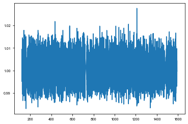

KIC 10080943¶
[1]:
%run setup.py
[2]:
t, y = np.loadtxt('../data/10080943_lc.txt', usecols=(0,1)).T
[3]:
plt.plot(t,y)
[3]:
[<matplotlib.lines.Line2D at 0x1c2316def0>]

[4]:
from scipy.ndimage import gaussian_filter
from maelstrom.utils import amplitude_spectrum
y_low = gaussian_filter(y,1.8)
y_high = y - y_low
plt.plot(*amplitude_spectrum(t, y), alpha=0.5)
plt.plot(*amplitude_spectrum(t, y_high), alpha=0.5)
WARNING: AstropyDeprecationWarning: Importing LombScargle from astropy.stats has been deprecated and will no longer be supported in future. Please import this class from the astropy.timeseries module instead [astropy.stats.lombscargle]
[4]:
[<matplotlib.lines.Line2D at 0x1c238d4e48>]

[5]:
ms = Maelstrom(t, y_high, freq=np.array([13.94758557, 15.68333011,
12.45257641,
# 12.89053954,
17.30504092,
# 14.20333404
]))
ms.first_look(segment_size=5)
[5]:
array([<matplotlib.axes._subplots.AxesSubplot object at 0x11a6adb70>,
<matplotlib.axes._subplots.AxesSubplot object at 0x1c238f7cf8>,
<matplotlib.axes._subplots.AxesSubplot object at 0x1c23a5c2e8>,
<matplotlib.axes._subplots.AxesSubplot object at 0x1c23a8e898>],
dtype=object)

[6]:
freq = ms.freq
time, flux = ms.time, ms.flux
[7]:
period_guess = 15.334
[8]:
def get_phase(nu, t, y):
arg = 2*np.pi*nu[None, :]*t[:, None]
D = np.concatenate((np.sin(arg), np.cos(arg),
np.ones((len(t), 1))), axis=1)
DT = D.T
DTD = np.dot(DT, D)
w = np.linalg.solve(DTD, np.dot(D.T, y))
return np.arctan2(w[:len(nu)], w[len(nu):2*len(nu)]) / (2*np.pi*nu)
[9]:
import tqdm
t0s = np.arange(time.min(), time.max(), 3.5)
phases = np.empty((len(t0s)-1, len(freq)))
phases[:] = np.nan
for i, t0 in tqdm.tqdm(enumerate(t0s[:-1]), total=len(t0s)-1):
m = (t0 <= time) & (time < t0s[i+1])
if m.sum() < 100:
continue
phases[i] = get_phase(freq, time[m], flux[m])
# phases -= np.nanmean(phases, axis=0)
full = np.mean(phases, axis=1)
100%|██████████| 420/420 [00:00<00:00, 3232.91it/s]
[10]:
m = np.isfinite(phases[:, 0])
res = xo.estimators.lomb_scargle_estimator(t0s[:-1][m], phases[m, 0], min_period=12, max_period=25)
f, p = res["periodogram"]
plt.plot(1 / f, p)
plt.axvline(res["peaks"][0]["period"], color="k")
plt.xlabel("period")
plt.ylabel("power")
[10]:
Text(0, 0.5, 'power')
[11]:
period_guess = res["peaks"][0]["period"]
arg = 2*np.pi*t0s[:-1][m]/period_guess
D = np.concatenate((np.sin(arg)[:, None],
np.cos(arg)[:, None],
np.ones((len(phases[m]), 1))), axis=-1)
w = np.linalg.solve(np.dot(D.T, D), np.dot(D.T, phases[m, 0]))
a_guess = np.sqrt(np.sum(w[:2]**2)) * 86400
period_guess, a_guess
[11]:
(15.335878873082686, 43.18400031048696)
Subdividing¶
[12]:
def dft_phase(x, y, freq):
freq = np.asarray(freq)
x = np.array(x)
y = np.array(y)
phase = []
for f in freq:
expo = 2.0 * np.pi * f * x
ft_real = np.sum(y * np.cos(expo))
ft_imag = np.sum(y * np.sin(expo))
phase.append(np.arctan2(ft_imag,ft_real))
return phase
[13]:
from astropy.stats import LombScargle
freq = ms.freq[:1]
segment_size=4
uHz_conv = 1e-6 * 24 * 60 * 60
time_0 = time[0]
time_slice, mag_slice, phase = [], [], []
time_delays, time_midpoints = [], []
# Iterate over lightcurve
for t, y in zip(time, flux):
time_slice.append(t)
mag_slice.append(y)
# In each segment
if t - time_0 > segment_size:
# Append the time midpoint
time_midpoints.append(np.mean(time_slice))
# And the phases for each frequency
phase.append(dft_phase(time_slice, mag_slice, freq))
time_0 = t
time_slice, mag_slice = [], []
phase = np.array(phase).T
# Phase wrapping patch
for ph, f in zip(phase, freq):
mean_phase = np.mean(ph)
ph[np.where(ph - mean_phase > np.pi/2)] -= np.pi
ph[np.where(ph - mean_phase < -np.pi/2)] += np.pi
ph -= np.mean(ph)
# ph = np.unwrap(ph)
# ph -= np.mean(ph)
td = ph / (2*np.pi*(f / uHz_conv * 1e-6))
time_delays.append(td)
weights = ms.get_weights(norm=False)
#|plt.scatter(time_midpoints,np.average(time_delays,axis=0, weights=weights))
td_time, td_td = time_midpoints,np.average(time_delays,axis=0, weights=weights[:1])
#nu_arr = freq
td_time = np.array(td_time)
td_td = np.array(td_td)
# td_time, td_td = np.array(time_midpoints), np.array(time_delays[0])
[14]:
weights
[14]:
array([1.34772162, 1.24429097, 0.91763563, 0.61523976])
[17]:
import theano.tensor as tt
with pm.Model() as subdivide_model:
logP = pm.Normal("logP", mu=np.log(period_guess), sd=1.0, testval=np.log(period_guess))
period = pm.Deterministic("period", pm.math.exp(logP))
mean = pm.Normal('mean', mu=np.median(td_td), sd=5, testval=np.median(td_td))
# The time of conjunction
phi = xo.distributions.Angle("phi")
logs_lc = pm.Normal('logs_lc', mu=np.log(np.std(flux)), sd=10, testval=0.)
logasini = pm.Normal('logasini', mu=np.log(a_guess), sd=5, testval=np.log(a_guess))
asini = pm.Deterministic("asini", tt.exp(logasini))
#drift = pm.Normal('drift', mu=0., sd=0.1, testval=0)
# Periastron sampled from uniform angle
omega = xo.distributions.Angle("omega", testval=0.)
# Eccentricity
eccen = pm.Uniform("eccen", lower=0, upper=0.9, testval=0.4)
# Mean anom
M = 2.0 * np.pi * td_time / period - phi
# True anom
kepler_op = xo.theano_ops.kepler.KeplerOp()
sinf, cosf = kepler_op(M, eccen + np.zeros(len(td_time)))
factor = 1.0 - tt.square(eccen)
factor /= 1.0 + eccen * cosf
psi = factor * (sinf*tt.cos(omega)+cosf*tt.sin(omega))
tau = asini * psi
#tau += td_time * drift
taumodel = pm.Deterministic('taumodel', tau - tt.mean(tau) + mean)
pm.Normal('obs', mu=taumodel, sd=tt.exp(logs_lc), observed=td_td)
plt.plot(td_time, xo.eval_in_model(taumodel))
plt.scatter(td_time, td_td)

[18]:
with subdivide_model:
map_params = xo.optimize(vars=[mean])
map_params = xo.optimize(start=map_params, vars=[logP])
map_params = xo.optimize(start=map_params, vars=[logasini])
map_params = xo.optimize(start=map_params, vars=[omega, eccen])
map_params = xo.optimize(start=map_params)
optimizing logp for variables: [mean]
5it [00:01, 2.80it/s, logp=-1.276811e+06]
message: Optimization terminated successfully.
logp: -1277151.0054081937 -> -1276810.5971639934
optimizing logp for variables: [logP]
13it [00:00, 88.30it/s, logp=-9.719662e+05]
message: Optimization terminated successfully.
logp: -1276810.5971639934 -> -971966.1627903979
optimizing logp for variables: [logasini]
16it [00:00, 83.34it/s, logp=-8.544680e+05]
message: Optimization terminated successfully.
logp: -971966.1627903979 -> -854468.0445354239
optimizing logp for variables: [eccen, omega]
137it [00:00, 282.98it/s, logp=-8.541406e+05]
message: Desired error not necessarily achieved due to precision loss.
logp: -854468.0445354239 -> -854140.5739847843
optimizing logp for variables: [eccen, omega, logasini, logs_lc, phi, mean, logP]
21it [00:00, 116.03it/s, logp=-1.021591e+05]
message: Desired error not necessarily achieved due to precision loss.
logp: -854140.5739847843 -> -114780.21445976157
[19]:
with subdivide_model:
trace = pm.sample(draws=2000, tune=2000, chains=2)
Auto-assigning NUTS sampler...
Initializing NUTS using jitter+adapt_diag...
Multiprocess sampling (2 chains in 2 jobs)
NUTS: [eccen, omega, logasini, logs_lc, phi, mean, logP]
Sampling 2 chains: 100%|██████████| 8000/8000 [12:15<00:00, 10.88draws/s]
The acceptance probability does not match the target. It is 0.9187384576573221, but should be close to 0.8. Try to increase the number of tuning steps.
There were 130 divergences after tuning. Increase `target_accept` or reparameterize.
The acceptance probability does not match the target. It is 0.16236133349742451, but should be close to 0.8. Try to increase the number of tuning steps.
The chain reached the maximum tree depth. Increase max_treedepth, increase target_accept or reparameterize.
The gelman-rubin statistic is larger than 1.4 for some parameters. The sampler did not converge.
The estimated number of effective samples is smaller than 200 for some parameters.
RV only¶
[12]:
rv_jd_a, rv_rv_a, rv_err_a = np.loadtxt('../../data/kic10080943a_JDrv.txt', delimiter=',', usecols=(0,1,2)).T
rv_jd_a += 2400000
rv_jd_a -= 2454833
rv_jd_b, rv_rv_b, rv_err_b = np.loadtxt('../../data/kic10080943b_JDrv.txt', delimiter=',', usecols=(0,1,2)).T
rv_jd_b += 2400000
rv_jd_b -= 2454833
plt.scatter(rv_jd_a % period_guess / period_guess, rv_rv_a)
plt.scatter(rv_jd_b % period_guess / period_guess, rv_rv_b)
[12]:
<matplotlib.collections.PathCollection at 0x1c275efe10>
[16]:
from exoplanet.orbits import get_true_anomaly
import pymc3 as pm
import theano.tensor as tt
from maelstrom.orbit import Orbit
with pm.Model() as model:
P = pm.Bound(pm.Normal, lower=0, upper=20)("P", mu=period_guess, sd=1,
shape=1, testval=period_guess)
asini = pm.Normal('asini', mu=np.array([a_guess, -1*a_guess]), sd=5, testval=np.array([a_guess, -1*a_guess]), shape=2)
logs_a = pm.Normal("logs_a", mu=np.log(np.median(rv_err_a)), sd=5.0)
logs_b = pm.Normal("logs_b", mu=np.log(np.median(rv_err_b)), sd=5.0)
ecc = xo.distributions.UnitUniform("ecc", shape=1, testval=0.5)
omega = xo.distributions.Angle("omega", shape=1)
gammav = pm.Uniform('gammav', lower=-50, upper=50, testval=0.)
phi = xo.distributions.Angle('phi', testval=0.)
orbit_a = Orbit(period=P,
lighttime=asini,
phi=phi,
eccen=ecc,
omega=omega)
vrad_a = orbit_a.get_radial_velocity(rv_jd_a)[:,0] + gammav
err_a = tt.sqrt(2*rv_err_a**2 + tt.exp(2*logs_a))
pm.Normal("obs", mu=vrad_a, sd=err_a, observed=rv_rv_a)
vrad_b = orbit_a.get_radial_velocity(rv_jd_b)[:,1] + gammav
err_b = tt.sqrt(2*rv_err_b**2 + tt.exp(2*logs_b))
pm.Normal("obs_b", mu=vrad_b, sd=err_b, observed=rv_rv_b)
t = np.linspace(rv_jd_a.min()-5, rv_jd_a.max()+5, 1000)
fine_grid_a = orbit_a.get_radial_velocity(t) + gammav
[17]:
with model:
map_soln = xo.optimize(start=model.test_point)
map_soln = xo.optimize(start=map_soln, vars=[gammav])
map_soln = xo.optimize(start=map_soln, vars=[phi])
map_soln = xo.optimize(start=map_soln)
optimizing logp for variables: [phi, gammav, omega, ecc, logs_b, logs_a, asini, P]
322it [00:01, 205.07it/s, logp=-2.168263e+01]
message: Desired error not necessarily achieved due to precision loss.
logp: -681450.5463788682 -> -21.68262962535469
optimizing logp for variables: [gammav]
5it [00:00, 63.38it/s, logp=-2.168263e+01]
message: Optimization terminated successfully.
logp: -21.68262962535469 -> -21.682629625354622
optimizing logp for variables: [phi]
3it [00:00, 42.23it/s, logp=-2.168263e+01]
message: Optimization terminated successfully.
logp: -21.682629625354622 -> -21.682629625354622
optimizing logp for variables: [phi, gammav, omega, ecc, logs_b, logs_a, asini, P]
96it [00:00, 360.59it/s, logp=-2.212767e+01]
message: Desired error not necessarily achieved due to precision loss.
logp: -21.682629625354622 -> -21.682629625354622
[18]:
map_soln
[18]:
{'P_interval__': array([1.19038812]),
'asini': array([ 44.9292204, -43.198366 ]),
'logs_a': array(-0.16539749),
'logs_b': array(-1.05667061),
'ecc_logodds__': array([-0.18874464]),
'omega_angle__': array([[-1.17601462],
[ 4.31474094]]),
'gammav_interval__': array(-0.99170963),
'phi_angle__': array([-2.7313461 , 3.54115056]),
'P': array([15.33620944]),
'ecc': array([0.45295343]),
'omega': array([-0.26609394]),
'gammav': array(-22.94254738),
'phi': array(-0.65700436)}
[20]:
with model:
fold = t % map_soln['P'] / map_soln['P']
sort = np.argsort(fold)
plt.plot(fold[sort], xo.eval_in_model(fine_grid_a, map_soln)[:,0][sort])
plt.plot(rv_jd_a % map_soln['P'] / map_soln['P'], rv_rv_a,'.k')
plt.plot(fold[sort], xo.eval_in_model(fine_grid_a, map_soln)[:,1][sort])
plt.plot(rv_jd_b % map_soln['P'] / map_soln['P'], rv_rv_b,'.k')
[21]:
np.random.seed(42)
with model:
trace = pm.sample(tune=2000, draws=2000, step=xo.get_dense_nuts_step(target_accept=0.95), start=map_soln)
Multiprocess sampling (2 chains in 2 jobs)
NUTS: [phi, gammav, omega, ecc, logs_b, logs_a, asini, P]
Sampling 2 chains: 100%|██████████| 8000/8000 [00:35<00:00, 225.12draws/s]
[22]:
pm.summary(trace)
/Users/danielhey/anaconda3/lib/python3.7/site-packages/pymc3/stats.py:991: FutureWarning: The join_axes-keyword is deprecated. Use .reindex or .reindex_like on the result to achieve the same functionality.
axis=1, join_axes=[dforg.index])
[22]:
| mean | sd | mc_error | hpd_2.5 | hpd_97.5 | n_eff | Rhat | |
|---|---|---|---|---|---|---|---|
| asini__0 | 44.924885 | 0.173424 | 0.002319 | 44.579209 | 45.259325 | 5496.583279 | 0.999759 |
| asini__1 | -43.194197 | 0.091308 | 0.001336 | -43.368314 | -43.009628 | 5345.994877 | 0.999759 |
| logs_a | -0.091387 | 0.165575 | 0.002104 | -0.416011 | 0.220438 | 4851.183366 | 0.999881 |
| logs_b | -0.852652 | 0.230484 | 0.003940 | -1.279749 | -0.383615 | 3454.348539 | 0.999813 |
| P__0 | 15.336216 | 0.000178 | 0.000003 | 15.335883 | 15.336577 | 3260.911780 | 0.999853 |
| ecc__0 | 0.453039 | 0.001636 | 0.000024 | 0.450002 | 0.456456 | 5022.503137 | 0.999815 |
| omega__0 | -0.266588 | 0.005529 | 0.000085 | -0.277859 | -0.256162 | 3981.518066 | 0.999931 |
| gammav | -22.935786 | 0.092157 | 0.001381 | -23.115612 | -22.754384 | 4348.433787 | 0.999873 |
| phi | -0.657458 | 0.010379 | 0.000190 | -0.678072 | -0.637912 | 3111.050305 | 0.999781 |
[23]:
import corner
corner.corner(pm.trace_to_dataframe(trace), smooth=0.1);
Maelstrom¶
[33]:
t, y = np.loadtxt('../data/10080943_lc.txt', usecols=(0,1)).T
ms = Maelstrom(t, y, freq=np.array([13.94758557, 15.68333011,
12.45257641,
12.89053954,
17.30504092,
14.20333404
]))
ms.setup_orbit_model(period=period_guess, eccen=0.47)
opt = ms.optimize()
[34]:
opt
[34]:
{'logperiod': array(2.73070653),
't0': array(0.1754545),
'varpi_angle__': array([0.70727021, 4.41585427]),
'eccen_interval__': array(-0.02445806),
'logs': array(1.50528192),
'lighttime': array([ 53.61766022, -38.84906062, -33.42202446, -51.58519959,
-27.89396805, 26.80916947]),
'mean_flux': array(-1.82077127e-05),
'W_hat_cos': array([ 1.05634432, -0.39108877, 0.13741391, 0.74102315, 0.31710875,
0.12761664]),
'W_hat_sin': array([ 0.85777381, -1.18869863, 0.92644697, 0.11229363, -0.53772146,
0.30426538]),
'period': array(15.34372403),
'varpi': array(0.15881722),
'eccen': array(0.49388591),
'tref': array(-1.11385146)}
[35]:
lt = opt['lighttime']
lt_ivar = np.arange(len(ms.freq)).astype(np.int32)
chi = lt * np.sqrt(lt_ivar)
mask_lower = chi < -1.0
mask_upper = chi > 1.0
if np.any(mask_lower) and np.any(mask_upper):
m1 = lt >= 0
m2 = ~m1
lt = np.array([
np.sum(lt_ivar[m1]*lt[m1]) / np.sum(lt_ivar[m1]),
np.sum(lt_ivar[m2]*lt[m2]) / np.sum(lt_ivar[m2]),
])
inds = 1 - m1.astype(np.int32)
else:
inds = np.zeros(len(lt), dtype=np.int32)
lt = np.array([np.sum(lt_ivar*lt) / np.sum(lt_ivar)])
pinned_lt = lt
nu_arr_negative = ms.freq[np.where(inds==1)]
nu_arr_positive = ms.freq[np.where(inds==0)]
[37]:
pinned_lt
[37]:
array([ 26.80916947, -37.20245805])
[36]:
nu_arr_negative
[36]:
array([15.68333011, 12.45257641, 12.89053954, 17.30504092])
[38]:
pinned_lt = np.array([45, -45])
[40]:
from exoplanet.orbits import get_true_anomaly
import theano.tensor as tt
from maelstrom.orbit import Orbit
with pm.Model() as model:
logP = pm.Bound(pm.Normal,
lower=np.log(5),
upper=np.log(50))("logP", mu=np.log(opt['period']), sd=10,
testval=np.log(opt['period']))
period = pm.Deterministic("period", pm.math.exp(logP))
phi = xo.distributions.Angle("phi")
logs_lc = pm.Normal('logs_lc', mu=0.0001*np.log(np.std(flux)), sd=10, testval=0.)
# a1sini = pm.Normal("a1sini", mu=pinned_lt[0], sd=15, testval=pinned_lt[0])
# a2sini = pm.Normal("a2sini", mu=pinned_lt[1], sd=15, testval=pinned_lt[1])
asini = pm.Uniform("a1sini", lower=-60, upper=60, testval=0., shape=len(ms.freq))
nu = pm.Normal('nu1', mu=ms.freq, sd=0.001, testval=ms.freq, shape=len(ms.freq))
# The baseline flux
mean = pm.Normal("mean", mu=0.0, sd=1., testval=0.00)
omega = xo.distributions.Angle("omega", testval=opt['varpi'])
eccen = pm.Uniform("eccen", lower=0, upper=1-1e-3, testval=opt['eccen'])
orbit = Orbit(period=period,
lighttime=asini,
omega=omega,
eccen=eccen,
phi=phi,
freq=nu,)
full_lc = orbit.get_lightcurve_model(time, flux) + mean
# # GP parameters
logw0 = pm.Normal("logw0", mu=np.log(2*np.pi/10), sd=100,
testval=np.log(2*np.pi/10))
logpower = pm.Normal("logpower", mu=np.log(np.var(flux)), sd=100)
logS0 = pm.Deterministic("logS0", logpower - 4 * logw0)
kernel = xo.gp.terms.SHOTerm(log_S0=logS0, log_w0=logw0, Q=1/np.sqrt(2))
gp = xo.gp.GP(kernel, time, tt.exp(2*logs_lc) + tt.zeros(len(time)), J=2)
pm.Potential("obs", gp.log_likelihood(flux - full_lc))
# pm.Normal('obs', mu=full_lc, sd=tt.exp(logs_lc), observed=flux)
# from maelstrom.utils import amplitude_spectrum
# with model:
# full_lc = xo.eval_in_model(orbit1.get_lightcurve_model(time, flux) + orbit2.get_lightcurve_model(time, flux) + mean)
# plt.plot(*amplitude_spectrum(time, full_lc))
# plt.plot(*amplitude_spectrum(time, xo.eval_in_model(gp.predict())))
# plt.plot(*amplitude_spectrum(time, flux), alpha=0.2)
[53]:
with model:
test = xo.eval_in_model(orbit.get_time_delay(time), map_params)
[41]:
with model:
all_but = [v for v in model.vars if v.name not in ["logP_interval__", "logasini_interval__"]]
print(all_but)
map_params = xo.optimize(start=None, vars=[mean])
map_params = xo.optimize(start=map_params, vars=[logs_lc])
map_params = xo.optimize(start=map_params, vars=[logpower, logw0])
map_params = xo.optimize(start=map_params, vars=[omega])
map_params = xo.optimize(start=map_params, vars=[phi])
map_params = xo.optimize(start=map_params, vars=[nu])
map_params = xo.optimize(start=map_params, vars=all_but)
map_params = xo.optimize(start=map_params, vars=[asini])
map_params = xo.optimize(start=map_params, vars=all_but)
map_params = xo.optimize(start=map_params, vars=[logP])
map_params = xo.optimize(start=map_params, vars=all_but)
map_params = xo.optimize(start=map_params, vars=[asini])
# map_params = xo.optimize(start=map_params)
[phi_angle__, logs_lc, a1sini_interval__, nu1, mean, omega_angle__, eccen_interval__, logw0, logpower]
optimizing logp for variables: [mean]
5it [00:00, 15.82it/s, logp=-9.163383e+04]
message: Optimization terminated successfully.
logp: -91633.828619446 -> -91633.82860917287
optimizing logp for variables: [logs_lc]
9it [00:00, 17.46it/s, logp=-9.141334e+04]
message: Optimization terminated successfully.
logp: -91633.82860917287 -> -91413.34466631243
optimizing logp for variables: [logw0, logpower]
157it [00:08, 18.02it/s, logp=nan]
message: Desired error not necessarily achieved due to precision loss.
logp: -91413.34466631243 -> nan
final logp not finite, returning initial point
this suggests that something is wrong with the model
optimizing logp for variables: [omega]
10it [00:00, 14.55it/s, logp=-9.139289e+04]
message: Optimization terminated successfully.
logp: -91413.34466631243 -> -91392.88734357689
optimizing logp for variables: [phi]
10it [00:00, 12.93it/s, logp=-9.137243e+04]
message: Optimization terminated successfully.
logp: -91392.88734357689 -> -91372.43002084136
optimizing logp for variables: [nu1]
69it [00:04, 16.53it/s, logp=-9.137222e+04]
message: Desired error not necessarily achieved due to precision loss.
logp: -91372.43002084136 -> -91372.2151340031
optimizing logp for variables: [logpower, logw0, eccen, omega, mean, nu1, a1sini, logs_lc, phi]
201it [00:15, 12.84it/s, logp=-8.778066e+04]
message: Desired error not necessarily achieved due to precision loss.
logp: -91372.2151340031 -> -87780.66225683772
optimizing logp for variables: [a1sini]
7it [00:00, 14.50it/s, logp=-8.778066e+04]
message: Optimization terminated successfully.
logp: -87780.66225683772 -> -87780.6622568302
optimizing logp for variables: [logpower, logw0, eccen, omega, mean, nu1, a1sini, logs_lc, phi]
91it [00:07, 12.71it/s, logp=-8.778066e+04]
message: Desired error not necessarily achieved due to precision loss.
logp: -87780.6622568302 -> -87780.66225682988
optimizing logp for variables: [logP]
11it [00:00, 13.02it/s, logp=-8.778014e+04]
message: Optimization terminated successfully.
logp: -87780.66225682988 -> -87780.13935379263
optimizing logp for variables: [logpower, logw0, eccen, omega, mean, nu1, a1sini, logs_lc, phi]
366it [00:27, 13.10it/s, logp=-8.676328e+04]
message: Desired error not necessarily achieved due to precision loss.
logp: -87780.13935379263 -> -86763.278841923
optimizing logp for variables: [a1sini]
3it [00:00, 11.70it/s, logp=-8.676328e+04]
message: Optimization terminated successfully.
logp: -86763.278841923 -> -86763.278841923
[45]:
map_params
[45]:
{'logP_interval__': array(-0.05248899),
'phi_angle__': array([-2.47541001, 3.72455975]),
'logs_lc': array(-5.34164897),
'a1sini_interval__': array([ 2.54312226, -1.84415116, -1.65807324, -2.69856194, -1.29883947,
1.53443407]),
'nu1': array([13.94758547, 15.68333016, 12.45257689, 12.89054031, 17.30504162,
14.20333566]),
'mean': array(5.3961631e-05),
'omega_angle__': array([-0.1865062 , 4.46824522]),
'eccen_interval__': array(0.14231698),
'logw0': array(4.76142513),
'logpower': array(14.48418565),
'logP': array(2.7305223),
'period': array(15.34089752),
'phi': array(-0.58658306),
'a1sini': array([ 51.25321208, -43.61267018, -40.79750263, -52.43300811,
-34.2767524 , 38.71849745]),
'omega': array(-0.04171615),
'eccen': array(0.5349838),
'logS0': array(-4.56151486)}
[61]:
mask = map_params['a1sini'] > 0
[64]:
val.T[mask]
[64]:
array([[0.00029825, 0.00029238, 0.00028638, ..., 0.0004718 , 0.00047275,
0.00047367],
[0.00022531, 0.00022087, 0.00021634, ..., 0.00035642, 0.00035713,
0.00035782]])
[68]:
fig, axes = plt.subplots(2,1, figsize=[3.3333,2.06*2], constrained_layout=True)
with model:
val = xo.eval_in_model(orbit.get_time_delay(time), map_params).T * 86400
tt_time = time % map_params['period'] / map_params['period']
sort = np.argsort(tt_time)
from maelstrom.utils import unique_colors
ax = axes[1]
pos_td = val[map_params['a1sini'] > 0]
pos = unique_colors(len(pos_td), cmap='Oranges')[::-1]
neg_td = val[map_params['a1sini'] < 0]
neg = unique_colors(len(neg_td), cmap='Blues')[::-1]
for td, color in zip(pos_td, pos):
ax.plot(tt_time[sort], td.T[sort], color=color, linewidth=0.9)
for td, color in zip(neg_td, neg):
ax.plot(tt_time[sort], td.T[sort], color=color, linewidth=0.9)
ax.set_xlabel('Orbital phase')
ax.set_ylabel('Time delay (s)')
ax.set_xlim(0,1)
from maelstrom.utils import amplitude_spectrum
ax = axes[0]
f,a = amplitude_spectrum(time, flux)
ax.plot(f,a, linewidth=0.7, c='black')
ax.set_xlim(0,24)
ax.set_ylim(0,1.6)
ax.set_xlabel('Frequency (d$^{-1}$)')
ax.set_ylabel('Amplitude (ppt)')
ax.set_xlim(10,22)
weights = ms.get_weights(norm=False)
pos_freq = ms.freq[map_params['a1sini'] > 0]
pos_weight = weights[map_params['a1sini'] > 0]
neg_freq = ms.freq[map_params['a1sini'] < 0]
neg_weight = weights[map_params['a1sini'] < 0]
for ff, weight, color in zip(pos_freq, pos_weight, pos):
ax.scatter(ff,weight+0.1,15,color=color, marker='v')
for ff, weight, color in zip(neg_freq, neg_weight, neg):
ax.scatter(ff,weight+0.1,15,color=color, marker='v')
plt.savefig(overleaf_path+'10080943_init_opt.pdf', dpi=300, bbox_inches='tight', pad_inches=0)

[58]:
from exoplanet.orbits import get_true_anomaly
import theano.tensor as tt
with pm.Model() as model:
logP = pm.Bound(pm.Normal,
lower=np.log(5),
upper=np.log(50))("logP", mu=np.log(opt['period']), sd=10,
testval=np.log(opt['period']))
period = pm.Deterministic("period", pm.math.exp(logP))
phi = xo.distributions.Angle("phi")
logs_lc = pm.Normal('logs_lc', mu=0.0001*np.log(np.std(flux)), sd=10, testval=0.)
# a1sini = pm.Normal("a1sini", mu=pinned_lt[0], sd=15, testval=pinned_lt[0])
# a2sini = pm.Normal("a2sini", mu=pinned_lt[1], sd=15, testval=pinned_lt[1])
a1sini = pm.Uniform("a1sini", lower=-60, upper=60, testval=pinned_lt[0])
a2sini = pm.Uniform("a2sini", lower=-60, upper=60, testval=pinned_lt[1])
nu1 = pm.Normal('nu1', mu=nu_arr_positive, sd=0.001, testval=nu_arr_positive, shape=len(nu_arr_positive))
nu2 = pm.Normal('nu2', mu=nu_arr_negative, sd=0.001, testval=nu_arr_negative, shape=len(nu_arr_negative))
# The baseline flux
mean = pm.Normal("mean", mu=0.0, sd=1., testval=0.00)
omega = xo.distributions.Angle("omega", testval=opt['varpi'])
eccen = pm.Uniform("eccen", lower=0, upper=1-1e-3, testval=opt['eccen'])
orbit1 = Orbit(period=period,
lighttime=a1sini,
omega=omega,
eccen=eccen,
phi=phi,
freq=nu1,
with_rv=True,
gammav=0.)
orbit2 = Orbit(period=period,
lighttime=a2sini,
omega=omega,
eccen=eccen,
phi=phi,
freq=nu2,
with_rv=True,
gammav=0.)
full_lc = orbit1.get_lightcurve_model(time, flux) + orbit2.get_lightcurve_model(time, flux) + mean
# # GP parameters
logw0 = pm.Normal("logw0", mu=np.log(2*np.pi/10), sd=100,
testval=np.log(2*np.pi/10))
logpower = pm.Normal("logpower", mu=np.log(np.var(flux)), sd=100)
logS0 = pm.Deterministic("logS0", logpower - 4 * logw0)
kernel = xo.gp.terms.SHOTerm(log_S0=logS0, log_w0=logw0, Q=1/np.sqrt(2))
gp = xo.gp.GP(kernel, time, tt.exp(2*logs_lc) + tt.zeros(len(time)), J=2)
pm.Potential("obs", gp.log_likelihood(flux - full_lc))
# pm.Normal('obs', mu=full_lc, sd=tt.exp(logs_lc), observed=flux)
# from maelstrom.utils import amplitude_spectrum`
# with model:
# full_lc = xo.eval_in_model(orbit1.get_lightcurve_model(time, flux) + orbit2.get_lightcurve_model(time, flux) + mean)
# plt.plot(*amplitude_spectrum(time, full_lc))
# plt.plot(*amplitude_spectrum(time, xo.eval_in_model(gp.predict())))
# plt.plot(*amplitude_spectrum(time, flux), alpha=0.2)
[59]:
with model:
all_but = [v for v in model.vars if v.name not in ["logP_interval__", "logasini_interval__"]]
print(all_but)
map_params = xo.optimize(start=None, vars=[mean])
map_params = xo.optimize(start=map_params, vars=[logs_lc])
map_params = xo.optimize(start=map_params, vars=[logpower, logw0])
map_params = xo.optimize(start=map_params, vars=[omega])
map_params = xo.optimize(start=map_params, vars=[phi])
map_params = xo.optimize(start=map_params, vars=[nu1, nu2])
map_params = xo.optimize(start=map_params, vars=all_but)
map_params = xo.optimize(start=map_params, vars=[a1sini, a2sini])
map_params = xo.optimize(start=map_params, vars=all_but)
map_params = xo.optimize(start=map_params, vars=[logP])
map_params = xo.optimize(start=map_params, vars=all_but)
map_params = xo.optimize(start=map_params, vars=[a1sini, a2sini])
# map_params = xo.optimize(start=map_params)
[phi_angle__, logs_lc, a1sini_interval__, a2sini_interval__, nu1, nu2, mean, omega_angle__, eccen_interval__, logw0, logpower]
optimizing logp for variables: [mean]
5it [00:00, 14.44it/s, logp=-3.755878e+05]
message: Optimization terminated successfully.
logp: -375587.7932657327 -> -375587.77287921746
optimizing logp for variables: [logs_lc]
10it [00:00, 16.14it/s, logp=-1.897250e+05]
message: Optimization terminated successfully.
logp: -375587.77287921746 -> -189724.96580000242
optimizing logp for variables: [logw0, logpower]
16it [00:01, 15.87it/s, logp=-1.667492e+05]
message: Optimization terminated successfully.
logp: -189724.96580000242 -> -166749.20077684356
optimizing logp for variables: [omega]
89it [00:06, 14.78it/s, logp=-1.667282e+05]
message: Desired error not necessarily achieved due to precision loss.
logp: -166749.20077684356 -> -166728.17278381056
optimizing logp for variables: [phi]
13it [00:00, 13.32it/s, logp=-1.667077e+05]
message: Optimization terminated successfully.
logp: -166728.17278381056 -> -166707.70834156446
optimizing logp for variables: [nu2, nu1]
63it [00:04, 14.38it/s, logp=-1.667077e+05]
message: Desired error not necessarily achieved due to precision loss.
logp: -166707.70834156446 -> -166707.6972500979
optimizing logp for variables: [logpower, logw0, eccen, omega, mean, nu2, nu1, a2sini, a1sini, logs_lc, phi]
142it [00:12, 8.40it/s, logp=-1.249259e+05]
message: Desired error not necessarily achieved due to precision loss.
logp: -166707.6972500979 -> -124925.86999531489
optimizing logp for variables: [a2sini, a1sini]
7it [00:00, 11.72it/s, logp=-1.249259e+05]
message: Optimization terminated successfully.
logp: -124925.86999531489 -> -124925.86999530705
optimizing logp for variables: [logpower, logw0, eccen, omega, mean, nu2, nu1, a2sini, a1sini, logs_lc, phi]
70it [00:06, 10.69it/s, logp=-1.249259e+05]
message: Desired error not necessarily achieved due to precision loss.
logp: -124925.86999530705 -> -124925.86999530692
optimizing logp for variables: [logP]
13it [00:01, 11.13it/s, logp=-1.249254e+05]
message: Optimization terminated successfully.
logp: -124925.86999530692 -> -124925.43716167277
optimizing logp for variables: [logpower, logw0, eccen, omega, mean, nu2, nu1, a2sini, a1sini, logs_lc, phi]
126it [00:09, 12.83it/s, logp=-1.249250e+05]
message: Desired error not necessarily achieved due to precision loss.
logp: -124925.43716167277 -> -124925.01292449453
optimizing logp for variables: [a2sini, a1sini]
3it [00:00, 11.57it/s, logp=-1.249250e+05]
message: Optimization terminated successfully.
logp: -124925.01292449453 -> -124925.01292449453
[43]:
map_params
[43]:
{'logP_interval__': array(-0.05248899),
'phi_angle__': array([-2.47541001, 3.72455975]),
'logs_lc': array(-5.34164897),
'a1sini_interval__': array([ 2.54312226, -1.84415116, -1.65807324, -2.69856194, -1.29883947,
1.53443407]),
'nu1': array([13.94758547, 15.68333016, 12.45257689, 12.89054031, 17.30504162,
14.20333566]),
'mean': array(5.3961631e-05),
'omega_angle__': array([-0.1865062 , 4.46824522]),
'eccen_interval__': array(0.14231698),
'logw0': array(4.76142513),
'logpower': array(14.48418565),
'logP': array(2.7305223),
'period': array(15.34089752),
'phi': array(-0.58658306),
'a1sini': array([ 51.25321208, -43.61267018, -40.79750263, -52.43300811,
-34.2767524 , 38.71849745]),
'omega': array(-0.04171615),
'eccen': array(0.5349838),
'logS0': array(-4.56151486)}
[61]:
rv_jd_a, rv_rv_a, rv_err_a = np.loadtxt('../../data/kic10080943a_JDrv.txt', delimiter=',', usecols=(0,1,2)).T
rv_jd_a += 2400000
rv_jd_a -= 2454833
rv_jd_b, rv_rv_b, rv_err_b = np.loadtxt('../../data/kic10080943b_JDrv.txt', delimiter=',', usecols=(0,1,2)).T
rv_jd_b += 2400000
rv_jd_b -= 2454833
[63]:
with model:
plt.scatter(time % 15.34003849 / 15.34003849, xo.eval_in_model(orbit1.get_radial_velocity(time), map_params))
plt.scatter(time % 15.34003849 / 15.34003849, xo.eval_in_model(orbit1.get_time_delay(time), map_params)*86400)
plt.scatter(rv_jd_a % 15.34003849 / 15.34003849, rv_rv_a)
[64]:
sampler = xo.PyMC3Sampler(window=50, finish=500)
with model:
burnin = sampler.tune(tune=1000, step_kwargs=dict(target_accept=0.9), start=map_params)
Sampling 4 chains: 12%|█▏ | 36/308 [02:05<15:48, 3.49s/draws]
---------------------------------------------------------------------------
KeyboardInterrupt Traceback (most recent call last)
~/anaconda3/lib/python3.7/site-packages/pymc3/sampling.py in _mp_sample(draws, tune, step, chains, cores, chain, random_seed, start, progressbar, trace, model, use_mmap, **kwargs)
998 with sampler:
--> 999 for draw in sampler:
1000 trace = traces[draw.chain - chain]
~/anaconda3/lib/python3.7/site-packages/pymc3/parallel_sampling.py in __iter__(self)
304 while self._active:
--> 305 draw = ProcessAdapter.recv_draw(self._active)
306 proc, is_last, draw, tuning, stats, warns = draw
~/anaconda3/lib/python3.7/site-packages/pymc3/parallel_sampling.py in recv_draw(processes, timeout)
213 pipes = [proc._msg_pipe for proc in processes]
--> 214 ready = multiprocessing.connection.wait(pipes)
215 if not ready:
~/anaconda3/lib/python3.7/multiprocessing/connection.py in wait(object_list, timeout)
919 while True:
--> 920 ready = selector.select(timeout)
921 if ready:
~/anaconda3/lib/python3.7/selectors.py in select(self, timeout)
414 try:
--> 415 fd_event_list = self._selector.poll(timeout)
416 except InterruptedError:
KeyboardInterrupt:
During handling of the above exception, another exception occurred:
ValueError Traceback (most recent call last)
<ipython-input-64-e75ea9af54ba> in <module>
1 sampler = xo.PyMC3Sampler(window=50, finish=500)
2 with model:
----> 3 burnin = sampler.tune(tune=1000, step_kwargs=dict(target_accept=0.9), start=map_params)
~/anaconda3/lib/python3.7/site-packages/exoplanet/sampling.py in tune(self, tune, start, step_kwargs, **kwargs)
205
206 self.count = 0
--> 207 self.warmup(start=start, step_kwargs=step_kwargs, **kwargs)
208 steps = self.window
209 trace = None
~/anaconda3/lib/python3.7/site-packages/exoplanet/sampling.py in warmup(self, start, step_kwargs, **kwargs)
138 step_kwargs = {}
139 step = self.get_step_for_trace(**step_kwargs)
--> 140 self._extend(self.start, start=start, step=step, **kwargs)
141 return self._current_trace
142
~/anaconda3/lib/python3.7/site-packages/exoplanet/sampling.py in _extend(self, steps, start, step, **kwargs)
126
127 self._current_trace = pm.sample(
--> 128 start=start, tune=steps, step=step, **kwargs
129 )
130 self.count += steps
~/anaconda3/lib/python3.7/site-packages/pymc3/sampling.py in sample(draws, step, init, n_init, start, trace, chain_idx, chains, cores, tune, nuts_kwargs, step_kwargs, progressbar, model, random_seed, live_plot, discard_tuned_samples, live_plot_kwargs, compute_convergence_checks, use_mmap, **kwargs)
447 _print_step_hierarchy(step)
448 try:
--> 449 trace = _mp_sample(**sample_args)
450 except pickle.PickleError:
451 _log.warning("Could not pickle model, sampling singlethreaded.")
~/anaconda3/lib/python3.7/site-packages/pymc3/sampling.py in _mp_sample(draws, tune, step, chains, cores, chain, random_seed, start, progressbar, trace, model, use_mmap, **kwargs)
1009 return MultiTrace(traces)
1010 except KeyboardInterrupt:
-> 1011 traces, length = _choose_chains(traces, tune)
1012 return MultiTrace(traces)[:length]
1013 finally:
~/anaconda3/lib/python3.7/site-packages/pymc3/sampling.py in _choose_chains(traces, tune)
1042 lengths = [max(0, len(trace) - tune) for trace in traces]
1043 if not sum(lengths):
-> 1044 raise ValueError('Not enough samples to build a trace.')
1045
1046 idxs = np.argsort(lengths)[::-1]
ValueError: Not enough samples to build a trace.
[ ]:
[45]:
[46]:
WARNING: AstropyDeprecationWarning: Importing LombScargle from astropy.stats has been deprecated and will no longer be supported in future. Please import this class from the astropy.timeseries module instead [astropy.stats.lombscargle]

[47]:
opt = map_params
[48]:
opt
[48]:
{'logP_interval__': array(-0.05304152),
'phi_angle__': array([2.84697063, 3.448891 ]),
'logs_lc': array(0.27237454),
'asini_interval__': array([ 1.19710235, -0.8571673 , -0.98050136]),
'omega_angle__': array([-0.68829479, 4.41884616]),
'mean': array(-0.04298838),
'lognu': array([2.63530639, 2.75259836, 2.52192766]),
'phase_angle__': array([[-1.75645807, 3.17034142, 1.76290606],
[ 4.11276393, 3.15417836, -4.11000361]]),
'logamp': array([ 0.30917564, 0.22535038, -0.06669878]),
'logw0_interval__': array(9.29309804),
'logpower': array(9.04306205),
'logP': array(2.73020446),
'period': array(15.33602234),
'phi': array(0.69008215),
'asini': array([ 53.60178129, -40.41369651, -45.44153712]),
'omega': array(-0.15452177),
'nu': array([13.94758524, 15.68332996, 12.45257786]),
'phase': array([-0.40362676, 0.78795378, 2.73639752]),
'logw0': array(1.14436979),
'logS0': array(4.4655829)}
[13]:
pinned_lt = [
53.60178129,
-43.
]
nu_arr_positive = np.array([
13.94758524
])
nu_arr_negative = np.array([
15.68332996, 12.45257786
])
[49]:
lt = opt['asini']
lt_ivar = np.arange(len(opt['nu'])).astype(np.int32)
chi = lt * np.sqrt(lt_ivar)
mask_lower = chi < -1.0
mask_upper = chi > 1.0
if np.any(mask_lower) and np.any(mask_upper):
m1 = lt >= 0
m2 = ~m1
lt = np.array([
np.sum(lt_ivar[m1]*lt[m1]) / np.sum(lt_ivar[m1]),
np.sum(lt_ivar[m2]*lt[m2]) / np.sum(lt_ivar[m2]),
])
inds = 1 - m1.astype(np.int32)
else:
inds = np.zeros(len(lt), dtype=np.int32)
lt = np.array([np.sum(lt_ivar*lt) / np.sum(lt_ivar)])
pinned_lt = lt
# Get frequencies for each star
nu_arr_negative = opt['nu'][np.where(inds==1)]
nu_arr_positive = opt['nu'][np.where(inds==0)]
[58]:
from exoplanet.orbits import get_true_anomaly
import theano.tensor as tt
with pm.Model() as pb2_model:
logP = pm.Bound(pm.Normal,
lower=np.log(5),
upper=np.log(50))("logP", mu=np.log(map_params['period']), sd=10.,
testval=np.log(map_params['period']))
period = pm.Deterministic("period", pm.math.exp(logP))
phi = xo.distributions.Angle("phi")
logs_lc = pm.Normal('logs_lc', mu=np.log(np.median(np.abs(np.diff(flux)))), sd=10, testval=np.log(np.median(np.abs(np.diff(flux)))))
asini_neg = pm.Normal("asini_pos",mu=pinned_lt[0], sd=20, testval=pinned_lt[0])
asini_pos = pm.Normal("asini_neg",mu=pinned_lt[1], sd=20, testval=pinned_lt[1])
mean = pm.Normal("mean", mu=0.0, sd=10.0, testval=0.)
omega = xo.distributions.Angle("omega")
eccen = pm.Uniform("eccen", lower=0, upper=1-1e-3, testval=0.444)
M = 2.0 * np.pi * time / period - phi
# True anom
f = get_true_anomaly(M, eccen + tt.zeros_like(M))
psi = - (1 - tt.square(eccen)) * tt.sin(f+omega) / (1 + eccen*tt.cos(f))
lognu_pos = pm.Normal("lognu_pos", mu=np.log(nu_arr_positive), sd=0.1, shape=len(nu_arr_positive))
nu_pos = pm.Deterministic("nu_pos", tt.exp(lognu_pos))
lognu_neg = pm.Normal("lognu_neg", mu=np.log(nu_arr_negative), sd=0.1, shape=len(nu_arr_negative))
nu_neg = pm.Deterministic("nu_neg", tt.exp(lognu_neg))
# Positive
# arg = 2. * np.pi * nu_pos[None, :] * (time[:, None] - (asini_pos / 86400.) * psi[:, None])
# W_hat_cos_pos = pm.Normal("W_hat_cos_pos", mu=0.0, sd=100.0,shape=len(nu_arr_positive))
# W_hat_sin_pos = pm.Normal("W_hat_sin_pos", mu=0.0, sd=100.0,shape=len(nu_arr_positive))
# model_tensor = tt.dot(tt.cos(arg), W_hat_cos_pos[:, None]) + tt.dot(tt.sin(arg), W_hat_sin_pos[:, None])
# lc_model = tt.squeeze(model_tensor)
# # Negative
# arg = 2. * np.pi * nu_neg[None, :] * (time[:, None] - (asini_neg / 86400.) * psi[:, None])
# W_hat_cos_neg = pm.Normal("W_hat_cos_neg", mu=0.0, sd=100.0,shape=len(nu_arr_negative))
# W_hat_sin_neg = pm.Normal("W_hat_sin_neg", mu=0.0, sd=100.0,shape=len(nu_arr_negative))
# model_tensor = tt.dot(tt.cos(arg), W_hat_cos_neg[:, None]) + tt.dot(tt.sin(arg), W_hat_sin_neg[:, None])
# lc_model += tt.squeeze(model_tensor)
# # Positive
arg = 2. * np.pi * nu_pos * (time[:, None] - ((asini_pos) / 86400) * psi[:, None])
D = tt.concatenate((tt.cos(arg), tt.sin(arg)), axis=-1)
DT = D.T
w = tt.slinalg.solve(tt.dot(DT, D), tt.dot(DT, flux))
lc_model = tt.dot(D, w)
# Negative
arg = 2. * np.pi * nu_neg * (time[:, None] - ((asini_neg) / 86400) * psi[:, None])
D = tt.concatenate((tt.cos(arg), tt.sin(arg)), axis=-1)
DT = D.T
w = tt.slinalg.solve(tt.dot(DT, D), tt.dot(DT, flux))
lc_model += tt.dot(D, w)
#GP parameters
# logw0 = logw0 = pm.Bound(pm.Normal,
# lower=np.log(2*np.pi/100.0),
# upper=np.log(2*np.pi/1.0))("logw0", mu=np.log(2*np.pi/10), sd=10,
# testval=np.log(2*np.pi/10))
# logpower = pm.Normal("logpower", mu=np.log(np.var(flux)), sd=10)
# logS0 = pm.Deterministic("logS0", logpower - 4 * logw0)
# kernel = xo.gp.terms.SHOTerm(log_S0=logS0, log_w0=logw0, Q=1/np.sqrt(2))
# gp = xo.gp.GP(kernel, time, tt.exp(2*logs_lc) + tt.zeros(len(time)), J=2)
# full_lc = lc_model + mean
# gp_l = gp.log_likelihood(flux - full_lc)
# #Weight likelihood equally with RV data
# pm.Potential("obs", gp_l)
full_lc = lc_model + mean
pm.Normal('obs', mu=full_lc, sd=tt.exp(logs_lc), observed=flux)
[59]:
with pb2_model:
all_but = [v for v in pb2_model.vars if v.name not in ["logP_interval__"]]
print(all_but)
map_params = xo.optimize(start=None, vars=[mean])
map_params = xo.optimize(start=map_params, vars=[logs_lc])
# map_params = xo.optimize(start=map_params, vars=[logpower, logw0])
# map_params = xo.optimize(start=map_params, vars=[W_hat_cos_neg, W_hat_cos_pos, W_hat_sin_neg, W_hat_sin_pos])
map_params = xo.optimize(start=map_params, vars=[phi])
map_params = xo.optimize(start=map_params, vars=[lognu_pos, lognu_neg])
map_params = xo.optimize(start=map_params, vars=all_but)
map_params = xo.optimize(start=map_params, vars=[asini_pos, asini_neg])
map_params = xo.optimize(start=map_params, vars=[omega, eccen])
map_params = xo.optimize(start=map_params, vars=all_but)
# map_params = xo.optimize(start=map_params, vars=[logP])
map_params = xo.optimize(start=map_params, vars=[period])
map_params = xo.optimize(start=map_params, vars=all_but)
# map_params = xo.optimize(start=map_params)
[phi_angle__, logs_lc, asini_pos, asini_neg, mean, omega_angle__, eccen_interval__, lognu_pos, lognu_neg]
optimizing logp for variables: ['mean']
message: Optimization terminated successfully.
logp: -264403.4710434688 -> -264403.4703756111
optimizing logp for variables: ['logs_lc']
message: Desired error not necessarily achieved due to precision loss.
logp: -264403.4703756111 -> -191709.93378942844
optimizing logp for variables: ['phi_angle__']
message: Optimization terminated successfully.
logp: -191709.93378942844 -> -191678.5181225986
optimizing logp for variables: ['lognu_neg', 'lognu_pos']
message: Desired error not necessarily achieved due to precision loss.
logp: -191678.5181225986 -> -191678.50112266222
optimizing logp for variables: ['lognu_neg', 'lognu_pos', 'eccen_interval__', 'omega_angle__', 'mean', 'asini_neg', 'asini_pos', 'logs_lc', 'phi_angle__']
message: Desired error not necessarily achieved due to precision loss.
logp: -191678.50112266222 -> -191678.50112266184
optimizing logp for variables: ['asini_pos', 'asini_neg']
message: Optimization terminated successfully.
logp: -191678.50112266184 -> -191678.40882854586
optimizing logp for variables: ['eccen_interval__', 'omega_angle__']
message: Optimization terminated successfully.
logp: -191678.40882854586 -> -191657.93669078787
optimizing logp for variables: ['lognu_neg', 'lognu_pos', 'eccen_interval__', 'omega_angle__', 'mean', 'asini_neg', 'asini_pos', 'logs_lc', 'phi_angle__']
message: Desired error not necessarily achieved due to precision loss.
logp: -191657.93669078787 -> -191657.38352164047
optimizing logp for variables: ['logP_interval__']
message: Desired error not necessarily achieved due to precision loss.
logp: -191657.38352164047 -> -191657.38180303088
optimizing logp for variables: ['lognu_neg', 'lognu_pos', 'eccen_interval__', 'omega_angle__', 'mean', 'asini_neg', 'asini_pos', 'logs_lc', 'phi_angle__']
message: Desired error not necessarily achieved due to precision loss.
logp: -191657.38180303088 -> -191657.381638973
[60]:
map_params
[60]:
{'logP_interval__': array(-0.05155323),
'phi_angle__': array([3.85765665, 2.26240394]),
'logs_lc': array(1.5181755),
'asini_pos': array(49.06203725),
'asini_neg': array(-48.97406846),
'mean': array(0.0003904),
'omega_angle__': array([-1.0650696 , -4.34345715]),
'eccen_interval__': array(-0.0423049),
'lognu_pos': array([2.63530638]),
'lognu_neg': array([2.75259833, 2.52192753]),
'logP': array(2.73106061),
'period': array(15.3491578),
'phi': array(1.04038398),
'omega': array(-2.90112501),
'eccen': array(0.48893593),
'nu_pos': array([13.94758513]),
'nu_neg': array([15.6833294 , 12.45257629])}
[61]:
with pb2_model:
fold_time = time % map_params['period'] / map_params['period']
sort = np.argsort(fold_time)
td_pos = xo.eval_in_model(asini_pos * psi, map_params)
td_neg = xo.eval_in_model(asini_neg * psi, map_params)
plt.plot(fold_time[sort], td_pos[sort])
plt.plot(fold_time[sort], td_neg[sort])

[103]:
sampler = xo.PyMC3Sampler(window=50, finish=500)
with pb2_model:
burnin = sampler.tune(tune=1000, step_kwargs=dict(target_accept=0.9), start=map_params)
Sampling 4 chains: 100%|██████████| 308/308 [26:45<00:00, 12.61s/draws]
Sampling 4 chains: 100%|██████████| 208/208 [17:42<00:00, 17.50s/draws]
Sampling 4 chains: 100%|██████████| 408/408 [38:13<00:00, 13.15s/draws]
Sampling 4 chains: 100%|██████████| 808/808 [54:41<00:00, 14.53s/draws]
Sampling 4 chains: 85%|████████▌ | 1962/2308 [6:23:42<1:37:38, 16.93s/draws]
KeyboardInterrupt
[ ]:
with pb2_model:
trace = sampler.sample(draws=1000)
[ ]:
Maelstrom + RV¶
[14]:
rv_jd_a, rv_rv_a, rv_err_a = np.loadtxt('data/kic10080943a_JDrv.txt', delimiter=',', usecols=(0,1,2)).T
rv_jd_a += 2400000
rv_jd_a -= 2454833
rv_jd_a -= ms.time_mid
rv_jd_b, rv_rv_b, rv_err_b = np.loadtxt('data/kic10080943b_JDrv.txt', delimiter=',', usecols=(0,1,2)).T
rv_jd_b += 2400000
rv_jd_b -= 2454833
rv_jd_b -= ms.time_mid
[15]:
plt.scatter(rv_jd_a % 15.33 / 15.33, rv_rv_a)
plt.scatter(rv_jd_b % 15.33 / 15.33, rv_rv_b)
[15]:
<matplotlib.collections.PathCollection at 0x1c31f5fe10>

[17]:
from exoplanet.orbits import get_true_anomaly
import theano.tensor as tt
import theano
rv_time_tensor_a = theano.shared(rv_jd_a)
rv_rv_tensor_a = theano.shared(rv_rv_a)
rv_time_tensor_b = theano.shared(rv_jd_b)
rv_rv_tensor_b = theano.shared(rv_rv_b)
with pm.Model() as pb2_model_RV:
logP = pm.Bound(pm.Normal,
lower=np.log(5),
upper=np.log(50))("logP", mu=np.log(15.3356), sd=5.0,
testval=np.log(15.3356))
period = pm.Deterministic("period", pm.math.exp(logP))
phi = xo.distributions.Angle("phi")
logs_lc = pm.Normal('logs_lc', mu=np.log(np.std(flux)), sd=10, testval=0.)
asini_pos = pm.Normal("asini_pos",mu=pinned_lt[0], sd=10, testval=pinned_lt[0])
asini_neg = pm.Normal("asini_neg",mu=pinned_lt[1], sd=10, testval=pinned_lt[1])
mean = pm.Normal("mean", mu=0.0, sd=10.0, testval=0.)
omega = xo.distributions.Angle("omega")
eccen = pm.Uniform("eccen", lower=0, upper=1-1e-3, testval=0.444)
M = 2.0 * np.pi * time / period - phi
# True anom
f = get_true_anomaly(M, eccen + tt.zeros_like(M))
psi = - (1 - tt.square(eccen)) * tt.sin(f+omega) / (1 + eccen*tt.cos(f))
lognu_pos = pm.Normal("lognu_pos", mu=np.log(nu_arr_positive), sd=0.1, shape=len(nu_arr_positive))
nu_pos = pm.Deterministic("nu_pos", tt.exp(lognu_pos))
lognu_neg = pm.Normal("lognu_neg", mu=np.log(nu_arr_negative), sd=0.1, shape=len(nu_arr_negative))
nu_neg = pm.Deterministic("nu_neg", tt.exp(lognu_neg))
# Positive
arg = 2. * np.pi * nu_pos * (time[:, None] - ((asini_pos) / 86400) * psi[:, None])
D = tt.concatenate((tt.cos(arg), tt.sin(arg)), axis=-1)
DT = D.T
w = tt.slinalg.solve(tt.dot(DT, D), tt.dot(DT, flux))
lc_model = tt.dot(D, w)
# Negative
arg = 2. * np.pi * nu_neg * (time[:, None] - ((asini_neg) / 86400) * psi[:, None])
D = tt.concatenate((tt.cos(arg), tt.sin(arg)), axis=-1)
DT = D.T
w = tt.slinalg.solve(tt.dot(DT, D), tt.dot(DT, flux))
lc_model += tt.dot(D, w)
# GP parameters
# logw0 = logw0 = pm.Bound(pm.Normal,
# lower=np.log(2*np.pi/100.0),
# upper=np.log(2*np.pi/1.0))("logw0", mu=np.log(2*np.pi/10), sd=10,
# testval=np.log(2*np.pi/10))
# logpower = pm.Normal("logpower", mu=np.log(np.var(flux)), sd=10)
# logS0 = pm.Deterministic("logS0", logpower - 4 * logw0)
# kernel = xo.gp.terms.SHOTerm(log_S0=logS0, log_w0=logw0, Q=1/np.sqrt(2))
# gp = xo.gp.GP(kernel, time, tt.exp(2*logs_lc) + tt.zeros(len(time)), J=2)
full_lc = lc_model + mean
# gp_l = gp.log_likelihood(flux - full_lc)
# #Weight likelihood equally with RV data
# pm.Potential("obs", gp_l)
# RADIAL VELOCITIES
logs_rv_a = pm.Normal('logs_RV_a', mu=0., sd=10)
logs_rv_b = pm.Normal('logs_RV_b', mu=0., sd=10)
gammav = pm.Normal('gammav', mu=0., sd=100.)
# Positive
rv_mean_anom = (2.0 * np.pi * rv_time_tensor_a / period - phi)
rv_true_anom = get_true_anomaly(rv_mean_anom, eccen + tt.zeros_like(rv_mean_anom))
rv_vrad_a = ((asini_pos / 86400) * (-2.0 * np.pi * (1 / period) * (1/tt.sqrt(1.0 - tt.square(eccen))) * (tt.cos(rv_true_anom + omega) + eccen*tt.cos(omega))))
rv_vrad_a *= 299792.458 # c in km/s
rv_vrad_a += gammav
# Negative
rv_mean_anom = (2.0 * np.pi * rv_time_tensor_b / period - phi)
rv_true_anom = get_true_anomaly(rv_mean_anom, eccen + tt.zeros_like(rv_mean_anom))
rv_vrad_b = ((asini_neg / 86400) * (-2.0 * np.pi * (1 / period) * (1/tt.sqrt(1.0 - tt.square(eccen))) * (tt.cos(rv_true_anom + omega) + eccen*tt.cos(omega))))
rv_vrad_b *= 299792.458 # c in km/s
rv_vrad_b += gammav
pm.Normal("obs_radial_velocity_a", mu=rv_vrad_a, sd=tt.exp(logs_rv_a), observed=rv_rv_tensor_a.get_value())
pm.Normal("obs_radial_velocity_b", mu=rv_vrad_b, sd=tt.exp(logs_rv_b), observed=rv_rv_tensor_b.get_value())
pm.Normal('obs_lc', mu=full_lc, sd=tt.exp(logs_lc), observed=flux)
# full_lc = lc_model + mean
# pm.Normal('obs', mu=full_lc, sd=tt.exp(logs_lc), observed=flux)
[28]:
with pb2_model_RV:
all_but = [v for v in pb2_model_RV.vars if v.name not in ["logP_interval__", "logasini_interval__"]]
print(all_but)
map_params = xo.optimize(start=None, vars=[mean])
map_params = xo.optimize(start=map_params, vars=[logs_lc, logs_rv_a])
map_params = xo.optimize(start=map_params, vars=[gammav])
# map_params = xo.optimize(start=map_params, vars=[phase, logamp])
map_params = xo.optimize(start=map_params, vars=[eccen, omega])
map_params = xo.optimize(start=map_params, vars=[phi])
map_params = xo.optimize(start=map_params, vars=[nu_pos, nu_neg])
map_params = xo.optimize(start=map_params, vars=all_but)
map_params = xo.optimize(start=map_params, vars=[asini_pos, asini_neg])
map_params = xo.optimize(start=map_params, vars=all_but)
map_params = xo.optimize(start=map_params, vars=[logP])
map_params = xo.optimize(start=map_params, vars=all_but)
plt.scatter(rv_jd_a % 15.33 / 15.33, xo.eval_in_model(rv_vrad_a, map_params))
# map_params = xo.optimize(start=map_params)
[phi_angle__, logs_lc, asini_pos, asini_neg, mean, omega_angle__, eccen_interval__, lognu_pos, lognu_neg, logs_RV_a, logs_RV_b, gammav]
optimizing logp for variables: ['mean']
message: Optimization terminated successfully.
logp: -794763.9144321176 -> -794763.9143904693
optimizing logp for variables: ['logs_RV_a', 'logs_lc']
message: Optimization terminated successfully.
logp: -794763.9143904693 -> -223197.9943471864
optimizing logp for variables: ['gammav']
message: Optimization terminated successfully.
logp: -223197.9943471864 -> -220448.23359201144
optimizing logp for variables: ['omega_angle__', 'eccen_interval__']
message: Optimization terminated successfully.
logp: -220448.23359201144 -> -196143.84383143304
optimizing logp for variables: ['phi_angle__']
message: Optimization terminated successfully.
logp: -196143.84383143304 -> -196013.9415108297
optimizing logp for variables: ['lognu_neg', 'lognu_pos']
message: Desired error not necessarily achieved due to precision loss.
logp: -196013.9415108297 -> -196013.91453271103
optimizing logp for variables: ['gammav', 'logs_RV_b', 'logs_RV_a', 'lognu_neg', 'lognu_pos', 'eccen_interval__', 'omega_angle__', 'mean', 'asini_neg', 'asini_pos', 'logs_lc', 'phi_angle__']
message: Desired error not necessarily achieved due to precision loss.
logp: -196013.91453271103 -> -190934.58753482753
optimizing logp for variables: ['asini_neg', 'asini_pos']
message: Optimization terminated successfully.
logp: -190934.58753482753 -> -190934.58753482753
optimizing logp for variables: ['gammav', 'logs_RV_b', 'logs_RV_a', 'lognu_neg', 'lognu_pos', 'eccen_interval__', 'omega_angle__', 'mean', 'asini_neg', 'asini_pos', 'logs_lc', 'phi_angle__']
message: Desired error not necessarily achieved due to precision loss.
logp: -190934.58753482753 -> -190934.5875348261
optimizing logp for variables: ['logP_interval__']
message: Desired error not necessarily achieved due to precision loss.
logp: -190934.5875348261 -> -190932.96191555914
optimizing logp for variables: ['gammav', 'logs_RV_b', 'logs_RV_a', 'lognu_neg', 'lognu_pos', 'eccen_interval__', 'omega_angle__', 'mean', 'asini_neg', 'asini_pos', 'logs_lc', 'phi_angle__']
message: Desired error not necessarily achieved due to precision loss.
logp: -190932.96191555914 -> -190931.24357961564
[43]:
rv_time_tensor_a.set_value(np.linspace(rv_jd_a[0], rv_jd_a[-1], 1000))
rv_rv_tensor_a.set_value(np.linspace(rv_jd_a[0], rv_jd_a[-1], 1000))
rv_time_tensor_b.set_value(np.linspace(rv_jd_a[0], rv_jd_a[-1], 1000))
rv_rv_tensor_b.set_value(np.linspace(rv_jd_a[0], rv_jd_a[-1], 1000))
with pb2_model_RV:
fold_time = rv_time_tensor_a.get_value() % map_params['period'] / map_params['period']
sort = np.argsort(fold_time)
plt.plot(fold_time[sort], xo.eval_in_model(rv_vrad_a, map_params)[sort], linewidth=0.7)
plt.scatter(rv_jd_a % map_params['period'] / map_params['period'], rv_rv_a)
plt.plot(fold_time[sort], xo.eval_in_model(rv_vrad_b, map_params)[sort], linewidth=0.7)
plt.scatter(rv_jd_b % map_params['period'] / map_params['period'], rv_rv_b)
rv_time_tensor_a.set_value(rv_jd_a)
rv_rv_tensor_a.set_value(rv_rv_a)
rv_time_tensor_b.set_value(rv_jd_b)
rv_rv_tensor_b.set_value(rv_rv_b)
plt.xlim(0,1)
plt.xlabel('Orbital phase')
plt.ylabel('RV (km/s)')
[43]:
Text(0, 0.5, 'RV (km/s)')

[30]:
rv_time_tensor_a.set_value(np.linspace(rv_jd_a[0], rv_jd_a[-1], 1000))
rv_rv_tensor_a.set_value(np.linspace(rv_jd_a[0], rv_jd_a[-1], 1000))
rv_time_tensor_b.set_value(np.linspace(rv_jd_a[0], rv_jd_a[-1], 1000))
rv_rv_tensor_b.set_value(np.linspace(rv_jd_a[0], rv_jd_a[-1], 1000))
with pb2_model_RV:
fold_time = time % map_params['period'] / map_params['period']
sort = np.argsort(fold_time)
td_pos = xo.eval_in_model(asini_pos * psi, map_params)
td_neg = xo.eval_in_model(asini_neg * psi, map_params)
plt.plot(fold_time[sort], td_pos[sort], c=blue)
plt.plot(fold_time[sort], td_neg[sort], c=blue)
plt.ylabel('Time delay (s)')
ax2 = plt.twinx()
fold_time = rv_time_tensor_a.get_value() % map_params['period'] / map_params['period']
sort = np.argsort(fold_time)
ax2.plot(fold_time[sort], xo.eval_in_model(rv_vrad_a, map_params)[sort], linewidth=0.7, c=red)
ax2.scatter(rv_jd_a % map_params['period'] / map_params['period'], rv_rv_a, c=red)
ax2.plot(fold_time[sort], xo.eval_in_model(rv_vrad_b, map_params)[sort], linewidth=0.7, c=red)
ax2.scatter(rv_jd_b % map_params['period'] / map_params['period'], rv_rv_b, c=red)
rv_time_tensor_a.set_value(rv_jd_a)
rv_rv_tensor_a.set_value(rv_rv_a)
rv_time_tensor_b.set_value(rv_jd_b)
rv_rv_tensor_b.set_value(rv_rv_b)
ax2.set_xlim(0,1)
plt.xlabel('Orbital phase')
ax2.set_ylabel('RV (km/s)')
[30]:
Text(0, 0.5, 'RV (km/s)')

[31]:
sampler = xo.PyMC3Sampler(window=200, finish=500)
with pb2_model_RV:
burnin = sampler.tune(tune=1000, step_kwargs=dict(target_accept=0.9), start=map_params)
Sampling 2 chains: 100%|██████████| 154/154 [25:27<00:00, 22.88s/draws]
Sampling 2 chains: 100%|██████████| 404/404 [1:04:06<00:00, 15.68s/draws]
Sampling 2 chains: 100%|██████████| 1454/1454 [1:14:48<00:00, 4.89s/draws]
Sampling 2 chains: 100%|██████████| 1004/1004 [09:20<00:00, 1.36draws/s]
[33]:
with pb2_model_RV:
trace = sampler.sample(draws=1000)
Multiprocess sampling (2 chains in 2 jobs)
NUTS: [gammav, logs_RV_b, logs_RV_a, lognu_neg, lognu_pos, eccen, omega, mean, asini_neg, asini_pos, logs_lc, phi, logP]
Sampling 2 chains: 100%|██████████| 2000/2000 [19:37<00:00, 1.26draws/s]
[34]:
pm.summary(trace)
[34]:
| mean | sd | mc_error | hpd_2.5 | hpd_97.5 | n_eff | Rhat | |
|---|---|---|---|---|---|---|---|
| logs_lc | 1.505374 | 2.791965e-03 | 5.074587e-05 | 1.499990 | 1.510728 | 3196.340603 | 0.999706 |
| asini_pos | 44.939928 | 1.859542e-01 | 3.730975e-03 | 44.601160 | 45.320801 | 2232.433828 | 1.003734 |
| asini_neg | -43.164430 | 1.459248e-01 | 2.753235e-03 | -43.448645 | -42.882756 | 2541.981270 | 0.999571 |
| mean | -0.000251 | 1.773215e-02 | 3.212764e-04 | -0.035832 | 0.033215 | 3216.097312 | 0.999866 |
| lognu_pos__0 | 2.635306 | 4.902410e-07 | 9.115598e-09 | 2.635305 | 2.635307 | 2752.307907 | 0.999522 |
| lognu_pos__1 | 2.653477 | 1.992874e-06 | 3.438912e-08 | 2.653473 | 2.653481 | 3053.138780 | 0.999506 |
| lognu_neg__0 | 2.752598 | 4.675916e-07 | 9.811853e-09 | 2.752598 | 2.752599 | 2820.092555 | 0.999541 |
| lognu_neg__1 | 2.521927 | 8.056798e-07 | 1.400438e-08 | 2.521926 | 2.521929 | 3137.253595 | 0.999674 |
| lognu_neg__2 | 2.556494 | 9.788879e-07 | 1.822999e-08 | 2.556492 | 2.556496 | 3193.144832 | 0.999993 |
| lognu_neg__3 | 2.850998 | 8.970943e-07 | 1.743723e-08 | 2.850996 | 2.851000 | 3013.964584 | 0.999838 |
| logs_RV_a | -0.014674 | 1.583377e-01 | 3.247754e-03 | -0.297979 | 0.308896 | 2265.071658 | 0.999568 |
| logs_RV_b | -0.250021 | 1.640359e-01 | 3.377739e-03 | -0.548067 | 0.075606 | 2332.310824 | 1.000122 |
| gammav | -22.865462 | 1.292413e-01 | 2.557174e-03 | -23.114060 | -22.606125 | 2673.717894 | 1.000419 |
| logP | 2.730220 | 1.578203e-05 | 3.652172e-07 | 2.730187 | 2.730249 | 1885.452828 | 0.999749 |
| period | 15.336257 | 2.420371e-04 | 5.601060e-06 | 15.335761 | 15.336705 | 1885.455054 | 0.999749 |
| phi | 0.593248 | 8.842523e-03 | 2.050051e-04 | 0.576717 | 0.611303 | 1608.894132 | 0.999690 |
| omega | -0.269973 | 7.671390e-03 | 1.592557e-04 | -0.285719 | -0.255600 | 1805.725501 | 0.999502 |
| eccen | 0.453255 | 2.300451e-03 | 4.609963e-05 | 0.448672 | 0.457444 | 2655.311820 | 0.999500 |
| nu_pos__0 | 13.947585 | 6.837678e-06 | 1.271406e-07 | 13.947572 | 13.947599 | 2752.307956 | 0.999522 |
| nu_pos__1 | 14.203336 | 2.830547e-05 | 4.884402e-07 | 14.203282 | 14.203392 | 3053.139932 | 0.999506 |
| nu_neg__0 | 15.683330 | 7.333392e-06 | 1.538825e-07 | 15.683317 | 15.683345 | 2820.093306 | 0.999541 |
| nu_neg__1 | 12.452575 | 1.003279e-05 | 1.743905e-07 | 12.452556 | 12.452595 | 3137.253841 | 0.999674 |
| nu_neg__2 | 12.890541 | 1.261839e-05 | 2.349945e-07 | 12.890518 | 12.890567 | 3193.145361 | 0.999993 |
| nu_neg__3 | 17.305041 | 1.552425e-05 | 3.017520e-07 | 17.305010 | 17.305070 | 3013.964816 | 0.999838 |
[18]:
with pb2_model_RV:
trace = pm.load_trace('traces/10080943_rv')
[19]:
import corner
corner.corner(pm.trace_to_dataframe(trace,
varnames=['asini_pos', 'asini_neg', 'gammav','period','phi','eccen','omega']),
smooth=1,
show_titles=True);
# plt.savefig('10080943.png', dpi=300,bbox_inches='tight')
[20]:
from maelstrom.utils import mass_function
import astropy.units as u
rounding = 3
samples = pm.trace_to_dataframe(trace, varnames=['period', 'asini_pos'])
mfs = mass_function(samples['period'].values * u.day, samples['asini_pos'].values*u.s)
#mfs = np.array(mfs)
upper, med, lower = np.percentile(mfs.value, [84.13, 50, 15.86])
print('mass_func', ': ', np.round(med,rounding), ' + ', np.round(upper - med,rounding), ' - ', np.round(med - lower,rounding))
mass_func : 0.414 + 0.005 - 0.005
[21]:
varnames=['period', 'asini_pos','asini_neg', 'phi', 'eccen', 'omega','gammav']
rounding = 4
for varname in varnames:
upper, med, lower = np.percentile(trace[varname], [84.13, 50, 15.86])
print(varname, ': ', np.round(med,rounding), ' + ', np.round(upper - med,rounding), ' - ', np.round(med - lower,rounding))
period : 15.3363 + 0.0002 - 0.0002
asini_pos : 44.9399 + 0.1817 - 0.1792
asini_neg : -43.1641 + 0.1465 - 0.1441
phi : 0.5933 + 0.0084 - 0.0088
eccen : 0.4532 + 0.0023 - 0.0022
omega : -0.2701 + 0.0076 - 0.0075
gammav : -22.8639 + 0.1282 - 0.1298
[28]:
with pb2_model_RV:
a = xo.eval_in_model(asini_pos * psi)
[27]:
samp
[27]:
{'logP_interval__': -0.05302221292474968,
'phi_angle__': array([2.38077305, 3.50810861]),
'logs_lc': 1.503106224196015,
'asini_pos': 44.947949539218946,
'asini_neg': -43.173468198233785,
'mean': 0.003932298023283192,
'omega_angle__': array([-1.33818057, 4.99958407]),
'eccen_interval__': -0.19096305685863374,
'lognu_pos': array([2.63530587, 2.65347761]),
'lognu_neg': array([2.75259784, 2.52192862, 2.55649459, 2.85099771]),
'logs_RV_a': 0.11236832140087478,
'logs_RV_b': -0.3777195088913156,
'gammav': -22.825830993916206,
'logP': 2.7302155683426648,
'period': 15.336192661233353,
'phi': 0.5962519902387579,
'omega': -0.2615280360501543,
'eccen': 0.45195138464403606,
'nu_pos': array([13.94757791, 14.20334656]),
'nu_neg': array([15.68332182, 12.45258985, 12.89055135, 17.3050386 ])}
[22]:
rv_time_tensor_a.set_value(np.linspace(rv_jd_a[0], rv_jd_a[-1], 1000))
rv_rv_tensor_a.set_value(np.linspace(rv_jd_a[0], rv_jd_a[-1], 1000))
rv_time_tensor_b.set_value(np.linspace(rv_jd_a[0], rv_jd_a[-1], 1000))
rv_rv_tensor_b.set_value(np.linspace(rv_jd_a[0], rv_jd_a[-1], 1000))
fig, axes = plt.subplots(2,1, figsize=[3.33333,2*2.06])
with pb2_model_RV:
for samp in xo.utils.get_samples_from_trace(trace, size=300):
taumod_pos = xo.eval_in_model(asini_pos * psi, samp)
taumod_neg = xo.eval_in_model(asini_neg * psi, samp)
ttime = (time) % samp['period'] / samp['period']
sort = np.argsort(ttime)
ax = axes[0]
ax.plot(ttime[sort], (taumod_pos - np.mean(taumod_pos))[sort], color=blue, linewidth=0.1, alpha=1, rasterized=True, zorder=1)
ax.plot(ttime[sort], (taumod_neg - np.mean(taumod_neg))[sort], color=orange, linewidth=0.1, alpha=1, rasterized=True, zorder=1)
ax = axes[1]
fold_time = rv_time_tensor_a.get_value() % samp['period'] / samp['period']
sort = np.argsort(fold_time)
ax.plot(fold_time[sort], xo.eval_in_model(rv_vrad_a, samp)[sort], linewidth=0.1, color=blue)
ax.plot(fold_time[sort], xo.eval_in_model(rv_vrad_b, samp)[sort], linewidth=0.1, color=orange)
ax.plot(rv_jd_b % samp['period'] / samp['period'], rv_rv_b, '.k', c=[0.91372549, 0.36862745, 0.05098039])
ax.plot(rv_jd_a % samp['period'] / samp['period'], rv_rv_a, '.k', c=[0.21568627, 0.52941176, 0.75424837])
axes[1].set_xlabel('Orbital phase')
axes[0].set_ylabel('Time delay (s)')
axes[1].set_ylabel('RV (km/s)')
axes[0].set_xticks([])
axes[0].set_xlim(0, 1)
axes[1].set_xlim(0, 1)
plt.subplots_adjust(hspace=0.03)
# plt.savefig(overleaf_path + '10080943.png', dpi=300, bbox_inches='tight', pad_inches=0)
rv_time_tensor_a.set_value(rv_jd_a)
rv_rv_tensor_a.set_value(rv_rv_a)
rv_time_tensor_b.set_value(rv_jd_b)
rv_rv_tensor_b.set_value(rv_rv_b)
---------------------------------------------------------------------------
TypeError Traceback (most recent call last)
<ipython-input-22-279db66669bf> in <module>
8 with pb2_model_RV:
9 for samp in xo.utils.get_samples_from_trace(trace, size=300):
---> 10 taumod_pos = xo.eval_in_model(asini_pos * psi, samp)
11 taumod_neg = xo.eval_in_model(asini_neg * psi, samp)
12 ttime = (time) % samp['period'] / samp['period']
~/anaconda3/lib/python3.7/site-packages/exoplanet/utils.py in eval_in_model(var, point, return_func, model, **kwargs)
74 if return_func:
75 return func(*args), func, args
---> 76 return func(*args)
77
78
~/anaconda3/lib/python3.7/site-packages/theano/compile/function_module.py in __call__(self, *args, **kwargs)
811 s.storage[0] = s.type.filter(
812 arg, strict=s.strict,
--> 813 allow_downcast=s.allow_downcast)
814
815 except Exception as e:
~/anaconda3/lib/python3.7/site-packages/theano/tensor/type.py in filter(self, data, strict, allow_downcast)
193 if b and data.shape[i] != 1:
194 raise TypeError("Non-unit value on shape on a broadcastable"
--> 195 " dimension.", data.shape, self.broadcastable)
196 i += 1
197 if (self.filter_checks_isfinite and
TypeError: ('Bad input argument to theano function with name "/Users/danielhey/anaconda3/lib/python3.7/site-packages/exoplanet/utils.py:46" at index 8 (0-based). ', 'Non-unit value on shape on a broadcastable dimension.', (2,), (True,))
[96]:
unique_colors(2, cmap='Blues')
[96]:
array([[0.67189542, 0.81437908, 0.90065359],
[0.21568627, 0.52941176, 0.75424837]])
[95]:
orange
[95]:
'#ff7f00'
[68]:
rv_time_tensor_a.set_value(np.linspace(rv_jd_a[0], rv_jd_a[-1], 1000))
rv_rv_tensor_a.set_value(np.linspace(rv_jd_a[0], rv_jd_a[-1], 1000))
rv_time_tensor_b.set_value(np.linspace(rv_jd_a[0], rv_jd_a[-1], 1000))
rv_rv_tensor_b.set_value(np.linspace(rv_jd_a[0], rv_jd_a[-1], 1000))
with pb2_model_RV:
fold_time = rv_time_tensor_a.get_value() % map_params['period'] / map_params['period']
sort = np.argsort(fold_time)
plt.plot(fold_time[sort], xo.eval_in_model(rv_vrad_a, map_params)[sort], linewidth=0.7)
plt.scatter(rv_jd_a % map_params['period'] / map_params['period'], rv_rv_a)
plt.plot(fold_time[sort], xo.eval_in_model(rv_vrad_b, map_params)[sort], linewidth=0.7)
plt.scatter(rv_jd_b % map_params['period'] / map_params['period'], rv_rv_b)
rv_time_tensor_a.set_value(rv_jd_a)
rv_rv_tensor_a.set_value(rv_rv_a)
rv_time_tensor_b.set_value(rv_jd_b)
rv_rv_tensor_b.set_value(rv_rv_b)
[68]:
$3086663.1 \; \mathrm{km}$
[ ]: